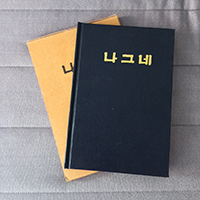

In 2006, I heard that, in the year 1984, a South Korean man named Sam Han Lee recovered at the age of 44 a level of spiritual accomplishment known as perfect, supreme Enlightenment which he had already achieved in a long-past previous life of his. He explained Enlightenment meant he opened his eyes completely to the world, and that he thereafter began to perceive things as they really are, how they came into being, how they will change, …. From then on, he began to let others call him by the name, "Tathagata", and he traveled the world guiding people to what he could see in reality, for free and without any financial support. He passed away in 2008 after I had known of and been in contact with him for only a couple short years. From what I heard and experienced, he seemed to be capable of answering any question on the spot, with exceptions related to personal destiny, but regardless of domain, asserted that he never lied, and encouraged people to try to confirm things for themselves based on the facts in real, daily life. In 1988, Tathagata published a book of prose in his native language of Korean entitled, "Traveler"). There have been some attempts to translate the book's prose, but given its especially unique content and the often inexorably culturally referential nature of poetry, additional efforts to refine the material's translation seemed indicated despite some words of caution.
Here is a photo of a copy of the original book I was gifted:

Having studied the material carefully over years via another English translation, in order to prepare fresh translations of the book, I collaborated closely with a natively Korean-speaking individual who had become my pen-pal, as he had learned from and had traveled with the author, Tathagata. The new version was to focus specifically on quality and the preservation of the exactly correct meanings of Tathagata's original words. Unfortunately these translations are still not 100% complete, but this version should help clarify many of the ambiguities found in the previous efforts. However, it's probably the case that it's impossible to translate certain words or teachings of his into any other languages such that they must be read directly in the original language of Korean, potentially by a native speaker, to get their true meanings. Not having a website to publish the material, but having felt a duty to do so, I decided to simply make the work available here. Please enjoy it.
How to read this text
Wherever you find square brackets, [like this], note that such bracketed statements are notes from me, the publisher, and are intended as explanations of or clarifications to the original text, often in situations where there was no suitable translation found or where the inclusion of cultural background would be essential to the complete understanding of the text. For example, "In-Yeon [special bonds from the past, usually with other people]" or "way [Do, 道]".
Also note that there are parenthetical statements in the text, (like this), but that they are part of the original text.
Caution
We the translators took a risk in thinking ourselves qualified to perform this work only due to the theoretical "level of truthfulness" required not to significantly damage the meanings, and because of the actual personal contact with Tathagata – something which we supposed gave us unique preparation. Whether or not this is a true fact is frankly not known to me – especially as I do not speak nor read Korean. I hope that our effort and the fact that I'm sharing it here does not become a precedent for people in the future to think themselves qualified to make accurate translations and call them Tathagata's words. Tathagata – the one who can see – is no longer here to check the result and help us make corrections. Furthermore, we should understand the fact that the true teachings of the historical saints in human history such as Gautama Buddha and Jesus were damaged, deteriorated, and quite literally lost to the point of non-recoverability by those who are not enlightened, through thousands of years through repeated translation.
A long-time affiliate of Tathagata's who I've known for many years told me, "I don't really approve of retranslating anything - actually I see that as the first stage of erosion. Even if the original has minor flaws, it's easy for someone to think they are making corrections/improvements when they could be adding their own ideas. In time someone else will think it needs correcting and so on and before you know it, it becomes the feeding of the five thousand.." … Later on, after I worked on a translation of the Precepts given by Tathagata and Tathagata's book Lamentation, the person told me, "as you know it can never be 100% accurate and there may be a time when someone will translate from the English to another language and then it loses more accuracy, I think it's ok to publish it but put the orginal Korean text next to it so if anyone wants to translate they should be encouraged to do it direct from the Korean and should also be encouraged to put the original korean next to their translation etc.."
Later, Soyun, who might be called Tathagata's sole disciple, told me, "Even though you give one correct sentence that's better than you do nothing for people. Instead, you should reveal your situation clearly as a translator to protect the readers."
Personally, I think I understand the necessity of (or at least the potential for the accomplishment of a good deed in) doing some translations given that certain material remains untranslated – but if you are going to do them, please make sure to provide a conspicuous notice about your level of training and include the name of the translator with the date the translation was done and the source content along with a link to the original webpage. You can see an example of this technique at the translation repository TranslatingTathagata.